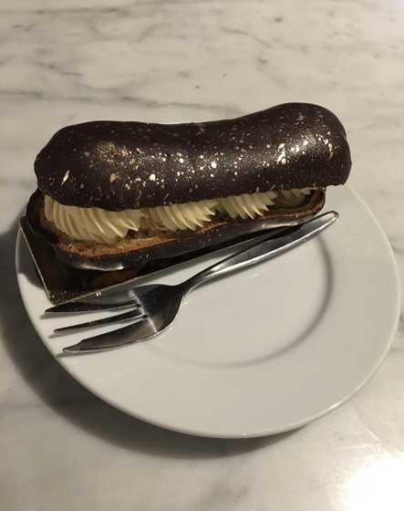
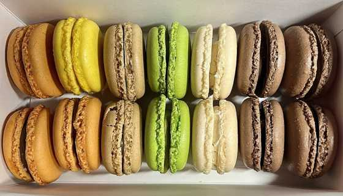

ABOUT
小さなお店の、手づくりのお菓子
五菓は、登米市迫町佐沼のアルテラスおおあみにある小さな洋菓子店です。一度に入れるのは2~3人ほど。入り口のすぐそばにショーケースがあり、ケーキや焼き菓子が並びます。
- 毎朝焼き上げるマフィンと、素材を選んだ洋菓子を菓子工房で手づくり(2016年の市の掲載情報)
- 登米市の地産地消推進店。米山町産の苺を使ったケーキの紹介があります
- ロールケーキ、レアチーズ、フィナンシェやクッキーなどの紹介記事があります
※店名の意味や店主の想いは確認できていません。内容は公開情報をもとにした制作側の整理で、最新の商品は店舗にご確認ください。

SWEETS
お菓子のイメージ
下の写真は雰囲気をお伝えするためのイメージです。実際の商品・価格は準備中です。






| 商品・価格 | 準備中 |
|---|
VOICE
口コミ イメージ例
以下は制作側が作成したイメージ例で、実在のお客様の声ではありません。
イメージ例
朝のうちに行くと、焼きたてのマフィンに出会えそう。小さな店先でゆっくり選ぶ時間が楽しみです。
イメージ例
季節の果物を使ったケーキは、手土産にぴったり。箱を開けた時の笑顔が目に浮かびます。
イメージ例
クッキーや焼き菓子はお茶の時間のお供に。ちょっとしたご褒美にしたくなります。